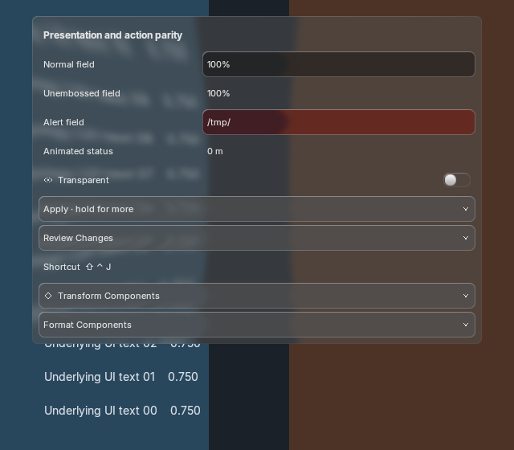
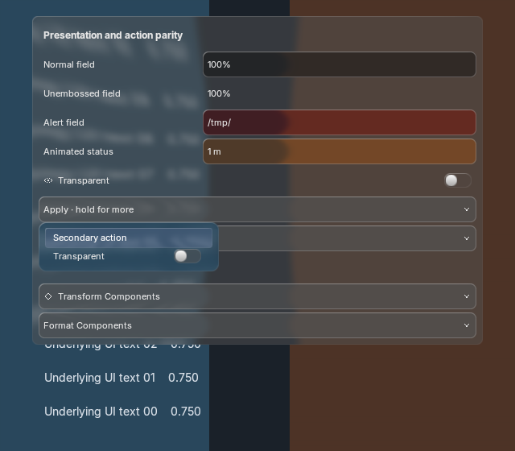
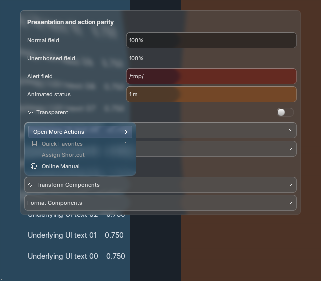

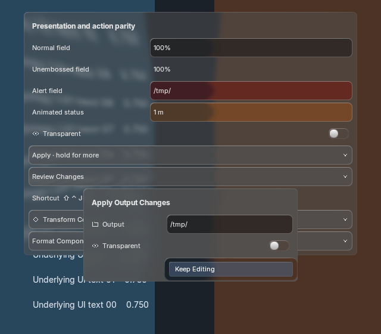
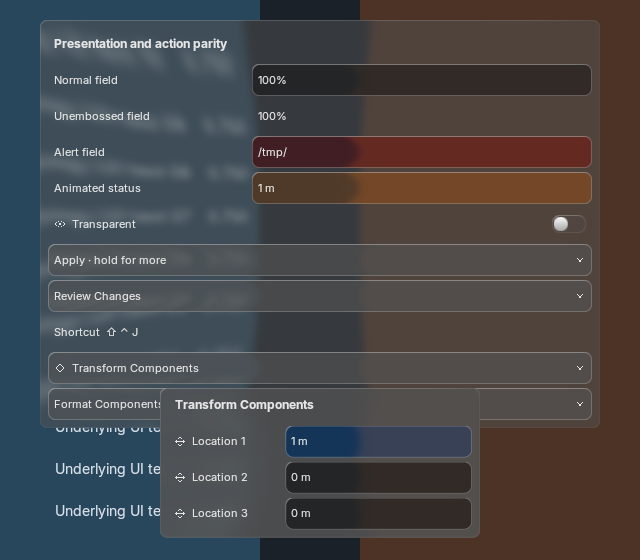
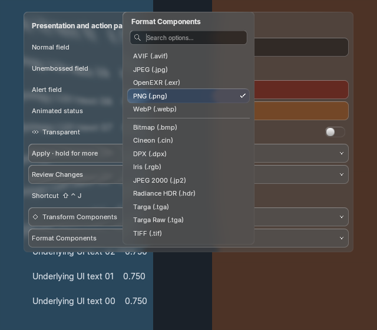
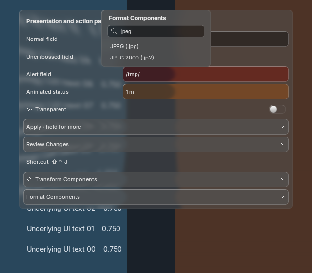
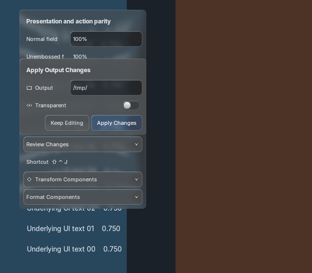
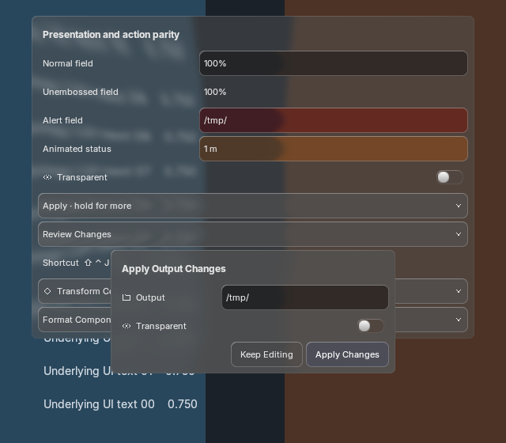
Feature overview and estimate · Capture provenance and execution results · Remaining right-click actions
Blender 5.2.2 at 1×, 1.5× and 2×; Blender 5.1.2 at 1×. Shared BVT glass, theme roles and source motion. Five final GPU runs pass; 390 native-batched/unbatched frame pairs match. No test-process activation or focus restoration was observed in the capture audit. These are controlled offscreen GPU scenes, with earlier real host integration documented separately.
No full-parity or exact-reference claim. Historical family evidence is labelled below. The recordings include the current light-menu contrast treatment. No new image generations were needed; existing source/reference targets remain unchanged.
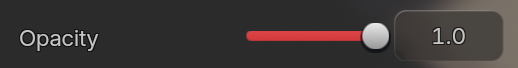
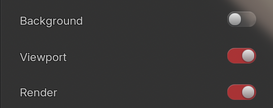
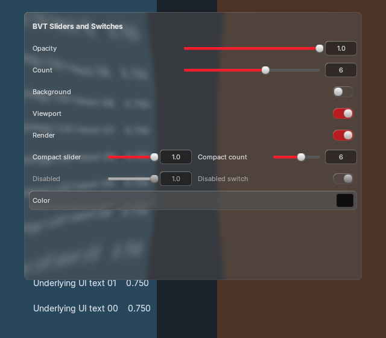
This side-by-side is a geometry/style review, not an equal-dimension pixel match.


Frame-by-frame inspection:
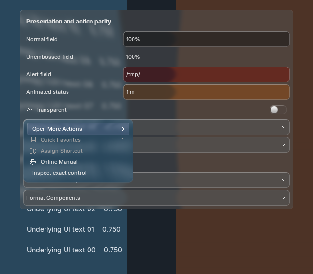

Images fit this page for comparison; open the image to inspect original pixels.










Factory active-theme capture plus synthetic light/purple inputs to the same renderer. Synthetic inputs do not represent installed presets. Glass stays enabled. Please flag text/highlight contrast; including the light-menu state.
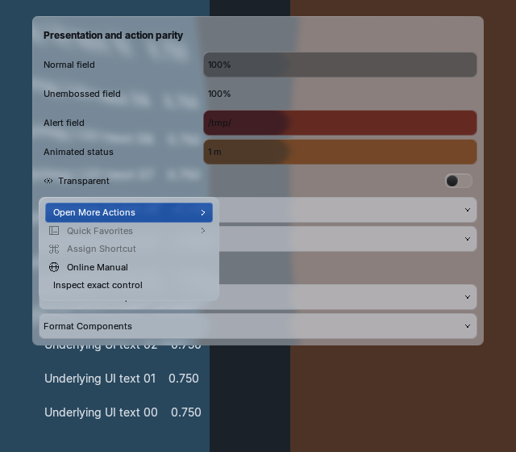
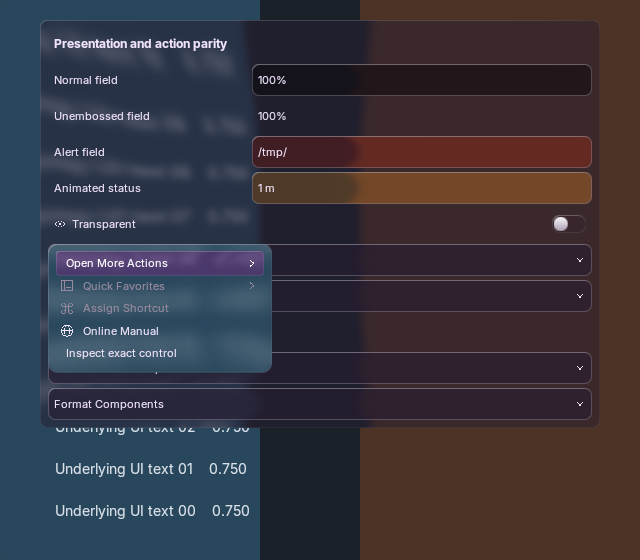
Fresh Blender captures: external labels, inset fields, search padding, selected-row sizing and color-picker Alpha alignment.
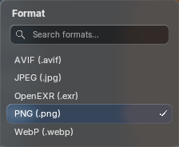
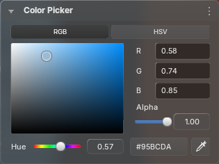
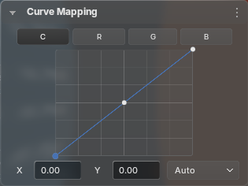
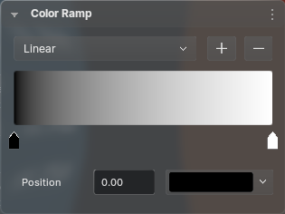
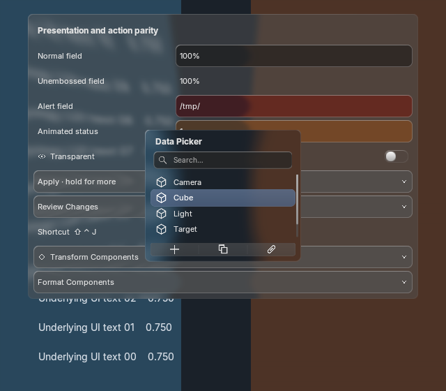
Pointers and decorators · Collection search · Enums and dropdowns · Editable lists · Pies and compound layouts · Full-menu text batching and motion
These pages retain their original dates/source hashes and reference limitations. They are not presented as freshly recaptured. The earlier rejected context-menu generation is not an acceptance target.
These notes stay in this browser when local storage is available. Export a JSON copy to preserve or share them; nothing is sent automatically.
Label, thin track, bubble handle, separate number entry; switches on every boolean. Check compact and disabled controls.
Underlying text should soften; rims and refraction should remain visible through nested surfaces.
Every option and hint should move together. Check reveal, settle, disabled motion and the reduced wide-field amplitude.
Compare body/title/icon sizes across fields, component editors and narrow popovers at all captured scales.
Check dark, synthetic light and purple. Includes current shared light-menu contrast treatment.
Inspect exact-owner component menus and contributed actions. Missing action families are listed in the context audit; this is not full parity acceptance.